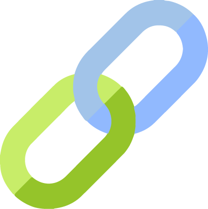

Ferramenta Externa
A Ferramenta Externa oferece ao professor uma maneira de vincular atividades de outros sites, dentro do Moodle através de LTIs
|
Uma LTI é uma maneira de linkar uma ferramenta de aprendizagem ao Moodle e, quando possível, enviar as notas de volta ao Moodle. |
A Ferramenta Externa permite que os participantes interajam com recursos e atividades de aprendizado compatíveis com LTI em outros sites. |
|

Quando o estudante clica no link da Ferramenta Externa, ele é automaticamente conectado ao provedor da ferramenta de conexão e podem usar a ferramenta desse site externo imediatamente. |
Comentários e avaliação
Ao usar a Ferramenta Externa para adicionar uma LTI, os estudantes precisam apenas fazer login no Moodle, não sendo necessário fazer login uma segunda vez no site da conexão. |
|
Vídeo Tutorial de Configuração e Aplicabilidade: |
Dicas de Uso
|